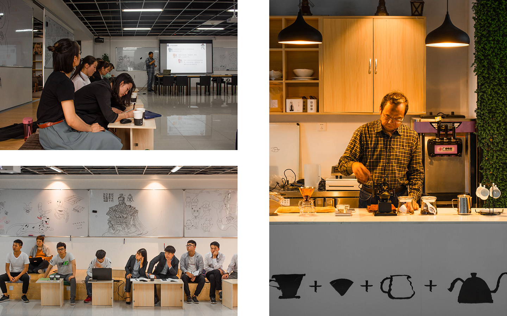

CREATIVE CAFE

The top floor of the main library at Henan Institute of Technology has been housing offices for several faculty-led startup groups,
but the plan to draw student involvement remain inactive due to the segregated location and atomized startup environment divided by enclosed offices.
In spring 2018, The school decided to reactivate an abandoned classroom as a creative space of idea exchanges between students and the startup
groups. As the co-director of design and student communication, I found the challenges not only in renovating the room into a sustainable program but also
the overlooked presence of a significant deaf community as part of the special student program on campus.
With faculty supports from the department of economics and student volunteers working on a limited budget, we introduced Creative Cafe: a dynamic room that
could switch into a coffee shop, a group study room, a multimedia lecture hall, an exhibition venue, and a space to leave random sketches, all achieved through
instant adjustments with sliding whiteboards. The cafe creates an informal environment for collective activities and self-expression between faculty, startup
groups, and students of both the deaf and non-deaf community, while offering a variety of refreshing in the coffee bar run by student teams. As a side program,
the cafe also runs a deaf-friendly barista training and intern program for students with interests (update: it now runs as a workshop with the option for credit!).
Sponsor: Henan Institute of Technology Startup Lab, Project director: Prof. Hongwei Wang
Student volunteers: Hao Chen, Ziru Wei, Han Zhang, Jiyong Wang, and their friends who stopped by to help.
My first impression of the 10th floor was on its silence and gloomy air. It had a typical ‘academic’ layout with enclosed offices aligning an infinite corridor.
Occasionally, someone could popup at a door with a phone or teacup in hands, walking with head down to the elevator or the bathroom, and vanishing from the corridor
without a chance to even nodding at another person.
The abandoned classroom prepared for our vision was a complete mess, though big enough for a school cafe project. The challenge was that our budget left few
options besides using as much of the classroom leftovers as possible for the renovation.
We sat at the office chairs donated by other startup teams, looking at the sunset outside of windows and envisioning the future of this forgotten corner...
---Recalling my day on campus in March 2018.
